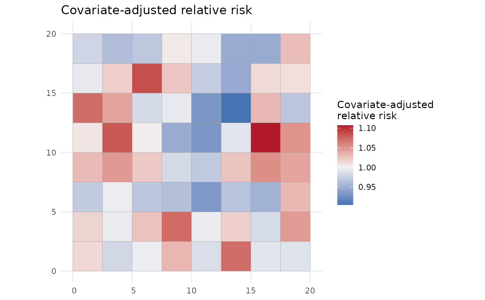

The main user interface, designed to feel like glm: give a
formula and an sf data object and it does the rest. The same call covers
three settings, chosen from the arguments you supply:
spatial (default):
sdalgcp(y ~ x + offset(log(pop)), data);raster covariates: add
rasters =aSpatRasterwhose layers are named in the formula – these enter on the intensity scale (seeSDALGCP2_raster);spatio-temporal: add
time =the name of a time column.
Usage
sdalgcp(
formula,
data,
time = NULL,
rasters = NULL,
covariates = NULL,
popden = NULL,
control = sdalgcp_control(),
verbose = FALSE
)Arguments
- formula
a model formula, e.g.
cases ~ x1 + offset(log(pop)).- data
an
sfobject of polygons whose columns hold the response, covariates and offset (one row per region, or per region-time for spatio-temporal fits).- time
optional name of a time column in
data; if given, a spatio-temporal model is fitted (data must have one row per region and time).- rasters
optional
terra::SpatRasterof spatially continuous covariates (layers named informula).- covariates
optional named list of
sfpoint layers giving covariates observed on a different support (e.g. monitors); each is kriged to the candidate points and enters with a Berkson correction (seeSDALGCP2_misaligned).- popden
optional population-density
SpatRaster; if supplied, the region aggregation is population-weighted.- control
a
sdalgcp_controllist of settings (smart defaults).- verbose
logical; print progress.
Value
a fitted model object of class c("sdalgcp", ...) with
print, summary, confint, predict and plot
methods.
Examples
# \donttest{
library(sf)
set.seed(1)
grid <- st_make_grid(st_as_sfc(st_bbox(c(xmin = 0, ymin = 0, xmax = 20, ymax = 20))),
n = c(8, 8))
regions <- st_sf(geometry = grid)
regions$x1 <- as.numeric(scale(st_coordinates(st_centroid(regions))[, 1]))
regions$pop <- round(runif(nrow(regions), 500, 3000))
regions$cases <- rpois(nrow(regions), regions$pop * exp(-6 + 0.5 * regions$x1))
fit <- sdalgcp(cases ~ x1 + offset(log(pop)), data = regions) # that's it
summary(fit)
#> Call: sdalgcp(formula = cases ~ x1 + offset(log(pop)), data = regions)
#>
#> Coefficients:
#> Estimate Std.Err z value Pr(>|z|)
#> (Intercept) -5.95e+00 6.45e-02 -92.23 <2e-16 ***
#> x1 4.03e-01 3.33e-02 12.11 <2e-16 ***
#> sigma^2 5.48e-01 2.14e-01 2.56 0.011 *
#> phi 2.38e-02 2.60e+04 0.00 1.000
#> ---
#> Signif. codes: 0 ‘***’ 0.001 ‘**’ 0.01 ‘*’ 0.05 ‘.’ 0.1 ‘ ’ 1
#>
#> Spatial scale phi: 0.0237578
#> Log-likelihood: 0.22016
#> MC importance-sampling ESS: 5 / 1000 (1%); log-lik MC SE: 0.425
#> Note: sigma^2 is the variance of the latent Gaussian process.
rr <- predict(fit) # an sf you can plot() directly
plot(fit) # default relative-risk map

# }